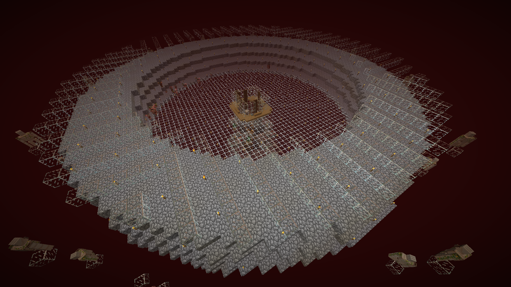

Jacobs farmer

Jacobs endermanfarm
{kind=link}
En annan viktig farm som Jacob byggde tidigt var Endermanfarmen. Delvis såg den till att alla hade gott om ender pearls, men det viktigast användningsområdet var såklart att farma XP. Farmen användes flitigt av medlemmarna.
Jacobs största projekt var hans guldfarm. Guldfarmen fungerade både som en väldigt effektiv AFK-xpfarm, men även som en guldfarm. Jacob höll länge farmen plats hemlig, för att ingen annan skulle använda den, men efter tag öppnade han upp den för allämnheten. Koordinaterna avslöjades vara -500, -500.

Jacobs guldfarm
I bakgrunden syns Jacobs tridentfarm. Det var en av de sista av farmerna som byggdes på servern. Målet med farmen var att få en trident som man sedan kunde sätta Channeling på för att kunna få Charged Creepers på ett pålitligt sätt. Creepersarna behövdes till Witherfarmen. Jacob sålde även dessa tridents i sin affär vid sitt hus.
Jacobs fårfarm hade ett syfte. Det var att ge tillräckligt med ull för att kunna bygga sin whiteboard. Från början fanns det bara vita får i rännan, men när den vita bakgrundsplattan var färdig så fördelade han alla färger jämt över fåren.
{kind=link}
{kind=link}